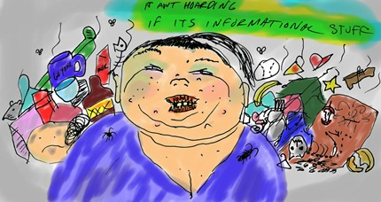

Top 10 Signs That You Are a Hoarder

{kind=link}
How do you know if you’re a hoarder? Here are the 10 telltale signs that indicate hoarding behavior.
1. If you have more than one of the same thing, you are a hoarder. This includes plates, spoons and socks. You have a symptom.
2. If you read through the entire newspaper before throwing it out, you are a hoarder. You don’t need all that paper laying around. Get it out of here!
3. If you save mp3 files on your computer, Ipod, or laptop you are a hoarder. Information wants to be free, but so does your hard drive. Delete them all you hoarder. Keep yourself out of jail.
4. If you have more than one family photo, or individual photos of family members framed on walls your hoarding is cluttering up the walls of the house. I can’t see their smoothness! Dump them. You can see those faces anytime.
5. If you wear more than one outfit you are a hoarder. You don’t need all those shirts. Just keep wearing the same one over and over. Wash it weekly if you have to. See how nice and clean your closets look now that they are empty. You’re welcome.
6. If you have more than 100 dollars to your name, you are a money hoarder. There are people starving out there with no jobs. What are you doing with all that money you selfish hoarder? Leave that shit to the dragons.
7. If you have food in your refrigerator or cabinets. Why are you hoarding all that food? The great depression is over. Let the supermarket hold the food. Now you can turn off that pesky refrigerator and sleep in peace.
8. If you own even one book. Books are obsolete. Stop hoarding all that paper, I can barely walk in here.
9. If you own a pet, you are a hoarder. Pets attract more pets, and they multiply when they get wet. You saw that movie Gremlins right? That phenomena is real and it happens to cats. Why do you think they hate baths so much?
10. If you are breathing right now, you are a hoarder. Stop hogging all that sweet oxygen for yourself. There are suffocating children in Africa. Limit your breathing to once a minute, or you are definitely a hoarder.
These and other symptoms, can indicate hoarding. If you think you are a hoarder, you most definitely are. There is no such thing as a pack rat.
Comments